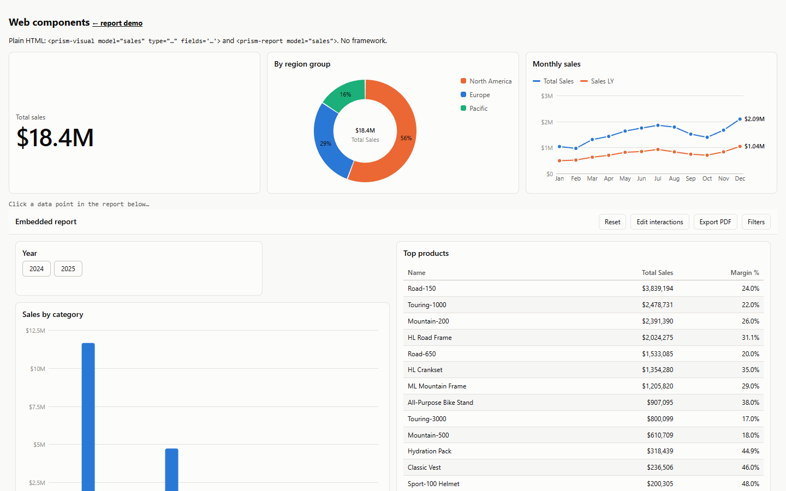

Web components, Vue, Svelte and Angular
@prismbi/prismbi/elements defines two custom elements when imported: <prism-report> and <prism-visual>. Frameworks set DOM properties and listen to DOM events natively, so the same elements work in plain HTML, Vue, Svelte, Angular, Solid and Lit. React users can also use @prismbi/prismbi/react.
Elements render into the light DOM, so the report stylesheet and your CSS variables apply as usual. Give them a height.
<prism-report> #
| Property | Attribute | Description |
|---|---|---|
model | model="name" | The DataModel. The attribute names a model registered with registerModel(name, model), which is handy in plain HTML. |
definition | src="/report.json" | The report definition (object or JSON). src fetches it. Setting a new definition reloads the same report. |
theme | theme="dark" | Theme name or object. Changing it re-themes without rebuilding. |
filters | — | Controlled report-level filters. |
chrome | — | Toolbar, page tabs, filter pane. |
| — | locale, page | Number and date locale; current page (id or name). |
report (read-only) | — | The underlying Report, for the imperative API. |
Report events are re-dispatched as DOM events with the same name and the payload in detail: selectionChanged, filtersChanged, pageChanged, dataPointClick, drill, rendered and error.
<prism-visual> #
One visual for your own layout:
-
Properties:
modelandspec({ type, fields, format, filters, … }). -
Attributes:
type,fieldsandformat(both as JSON),title,model,themeandlocale.
Plain HTML #

<prism-visual model="sales" type="card" fields='{"value":"Total Sales"}' style="height: 200px"></prism-visual>
<prism-report model="sales" src="/reports/sales.json" style="height: 720px"></prism-report>
<script type="module">
import { registerModel } from '@prismbi/prismbi/elements';
registerModel('sales', buildModel()); // every element naming "sales" mounts now
</script>Try it with npm run dev, then open /elements.html.
Vue 3 #
Tell the compiler that prism-* tags are custom elements:
// vite.config.ts
vue({ template: { compilerOptions: { isCustomElement: (tag) => tag.startsWith('prism-') } } });<script setup lang="ts">
import '@prismbi/prismbi/elements';
const model = buildModel();
const definition = { pages: [/* … */] };
</script>
<template>
<prism-report :model="model" :definition="definition" theme="dark" style="height: 720px"
@selectionChanged="(e) => console.log(e.detail.filters)" />
</template>Vue passes objects to custom elements as properties automatically. Use .prop if you need to force it.
Svelte #
<script>
import '@prismbi/prismbi/elements';
import { prismReport } from '@prismbi/prismbi/elements';
const model = buildModel();
</script>
<prism-report {model} definition={report} on:dataPointClick={(e) => console.log(e.detail)} style="height: 720px" />
<!-- or as an action on any element -->
<div use:prismReport={{ model, definition: report, theme: 'dark', on: { pageChanged: (e) => console.log(e) } }} style="height: 720px" />prismVisual is the matching action for a single visual.
Angular #
@Component({
selector: 'app-dashboard',
standalone: true,
schemas: [CUSTOM_ELEMENTS_SCHEMA],
template: `<prism-report [model]="model" [definition]="definition" theme="light"
(selectionChanged)="onSelect($event.detail)" style="display:block;height:720px"></prism-report>`,
})
export class DashboardComponent {
model = buildModel();
definition = salesReport;
}
// main.ts
import '@prismbi/prismbi/elements';Custom tag names #
defineElements({ report: 'acme-report', visual: 'acme-visual' }) registers the same elements under other names, if prism-* clashes with something else on the page.